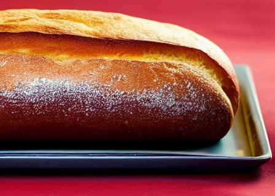

Boulangerie L'ami du pain à St Marcellin, France
Bienvenue sur le site internet de la boulangerie L'ami du pain à St Marcellin, France. Nous sommes une boulangerie traditionnelle qui propose une large gamme de pains, de viennoiseries et de pâtisseries. Tous nos produits sont faits maison avec des ingrédients de qualité. Nous sommes fiers de notre savoir-faire et de notre engagement envers la satisfaction de nos clients.
Nous sommes situés dans la charmante ville de St Marcellin, en France. Notre boulangerie est ouverte tous les jours de la semaine, de 7h à 19h. Venez nous rendre visite et goûter nos délicieux produits. Nous sommes impatients de vous accueillir chez L'ami du pain.